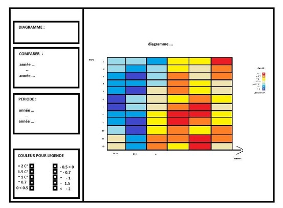
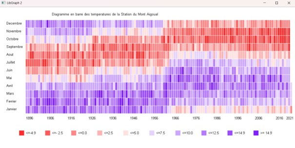
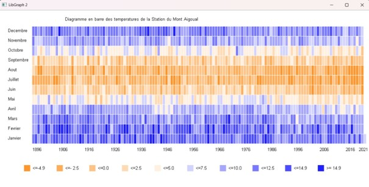
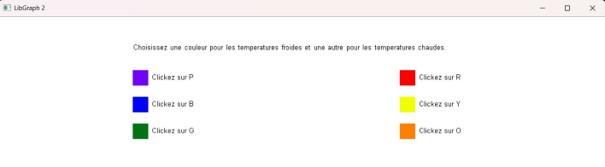

Compétences
- C++
- Persévérance
- Résolution de problèmes
- Gestion de fichiers et manipulation de données



7/04/2025 - 8/04/2025

21 heures

2 personnes

C++
Lors d’une situation d’apprentissage et d’évaluation (SAE), nous avons été amenés à développer une application permettant de visualiser des données météorologiques.
Le projet consistait à exploiter un fichier CSV contenant des dates et des températures afin de produire un graphique illustrant l’évolution de ces températures dans le temps.
Ce travail avait pour objectif de nous initier à la manipulation de fichiers en C++, à la représentation visuelle de données ainsi qu’à la conception d’une interface utilisateur simple.
Le projet a été réalisé en binôme sur une durée d’environ 21 heures, réparties 2 jours.

Dans un premier temps, nous devions concevoir un croquis du graphique attendu afin de définir précisément le rendu final.
Ensuite, nous avons dû lire et traiter les données issues du fichier CSV pour exploiter dans notre programme.
Une fois les données traitées, notre mission consistait à les représenter graphiquement à l’aide de la bibliothèque Libgraph (une bibliothèque graphique en C++ permettant de créer des interfaces et d’afficher des graphiques),
tout en développant une interface utilisateur permettant une interaction avec l’application, notamment dans le choix des couleurs.
Dans un premier temps, je me suis occupée de lire les données présentes dans le fichier CSV à l’aide de Visual Studio 2022.
L’objectif était de récupérer correctement les dates et les températures afin de pouvoir les exploiter par la suite dans notre application.
Une fois les données récupérées, je les ai transformées en un tableau de couleurs.
Nous avons choisi d’utiliser deux couleurs distinctes pour représenter les températures chaudes et froides, en faisant varier leur intensité afin d’obtenir un rendu plus précis et visuel.
Lors de l’affichage du graphique, nous avons remarqué un décalage des températures.
Après vérification, nous avons constaté qu’il manquait certaines dates dans le fichier CSV.
Nous avons tenté d’implémenter un système pour détecter ces absences, mais celui-ci ne fonctionnait pas correctement.
Nous avons donc ajouté manuellement les dates manquantes puis corrigé une erreur dans le code (un égal en trop) qui provoquait une incohérence dans l’attribution des couleurs.
Une fois les erreurs corrigées, nous avons pu afficher correctement le graphique. Nous avons ensuite ajouté une légende afin de rendre la lecture des données plus claire et compréhensible pour l’utilisateur.
Pour terminer, nous avons développé une interface utilisateur permettant de choisir les couleurs associées aux températures chaudes et froides. J’ai rencontré plusieurs problèmes d’affichage, notamment un menu qui restait visible en arrière-plan et des couleurs qui ne s’appliquaient pas correctement. Après correction de la gestion de l’affichage et des fonctions appelées quelques jours plus tard, j’ai réussi à obtenir un fonctionnement correct.
Une librairie pour développer des jeux vidéo en Python.
Un IDE Python
Outil de dessin pixel.


Ce projet m’a permis de prendre conscience de l’importance du débogage et de la rigueur dans le traitement des données. J’ai également identifié certaines lacunes, notamment dans la gestion des fichiers en C++, que je souhaite approfondir. Cette expérience a renforcé ma capacité à analyser des erreurs et à améliorer progressivement un programme.